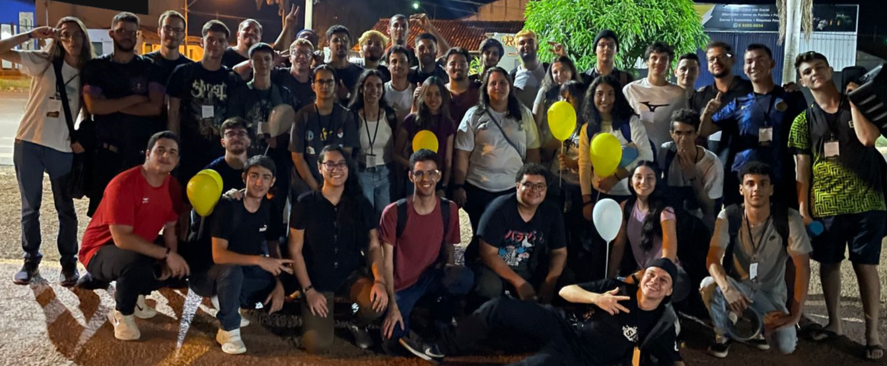
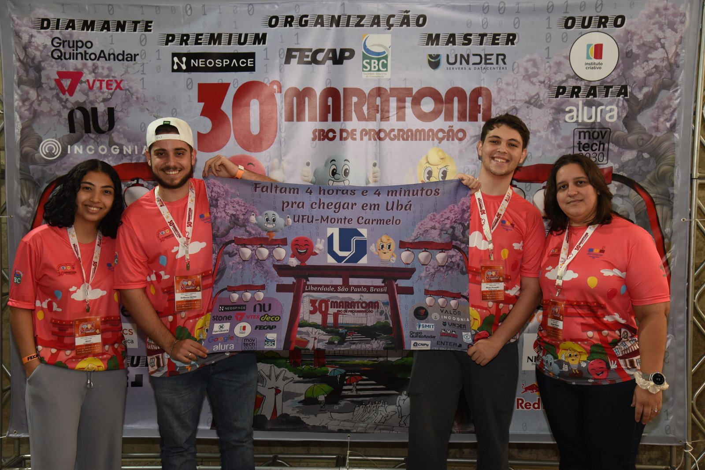

Quem somos nós?
O Projeto de Programação Competitiva UFU-MC é uma iniciativa do curso de Sistemas de Informação da Universidade Federal de Uberlândia (Campus Monte Carmelo) voltada para o desenvolvimento e aprimoramento de habilidades em resolução de problemas algorítmicos. Esse projeto tem como objetivo preparar alunos para participarem de competições de programação, como a Maratona de Programação da SBC e outras competições internacionais, como o ICPC (International Collegiate Programming Contest).


Como funciona?
Trata-se de uma competição em equipes de 3 pessoas que tentarão resolver em 5 horas o maior número de problemas que conseguir utilizando apenas 1 computador.
- Ganha a equipe que resolver mais problemas.
- Em caso de empate, ganha quem fez em menor tempo.
- A correção é feita em tempo real. Caso sua resposta seja julgada errada a equipe é imediatamente avisada e tem a oportunidade de remandar o problema, caso esteja certo, a equipe recebe um balão referente ao problema que acabou de acertar.
Os balões são utilizados como referência, ou seja, você tem uma demonstração visual do desempenho das demais equipes, por exemplo, se temos muitos balões azuis, muito provavelmente o problema referente ao balão azul é um dos mais fáceis da prova, sendo assim, você deve começar com ele já que tempo é essencial.
Por que participar?
Por que um bom desempenho nesta competição seria um diferencial no seu currículo?
Um bom maratonista sabe trabalhar em equipe, afinal, são 3 pessoas em apenas um computador, portanto vai bem a equipe que souber se comunicar e delegar melhor as tarefas que surgem.
Também deve saber trabalhar sob pressão, não só por ter pouco tempo para fazer os problemas mas também saber controlar os nervos ao ver o desempenho dos seus demais concorrentes, por exemplo, imagine só você no meio da competição travado em um problema vendo balões chegando a todo momento, complicado né?
Como se tudo isso já não bastasse, o bom competidor deve ter raciocínio lógico rápido e programar com agilidade e precisão, afinal, erros custam muito tempo.
Agora pense bem, não são essas qualidades que as empresas procuram em seus profissionais?
É muito comum maratonistas em destaque serem contratados por grandes empresas como Google e Facebook devido à similaridade dos problemas da competição com os apresentados nas entrevistas técnicas dessas empresas.
Além disso, a Maratona te proporciona experiências incríveis. As finais da competição são sediadas cada ano em um país diferente, você tem então a oportunidade entrar em contato com programadores do mundo todo, melhorar seu networking e ainda por cima conhecer diferentes culturas e lugares.
Maratonas
Maratona SBC de Programação (ICPC)
A Maratona de Programação é um evento organizado pela Sociedade Brasileira de Computação desde 1996, que classificou equipes para a International Collegiate Programming Contest (ICPC). Voltada para alunos de graduação e início de pós-graduação na área de Computação e afins, a competição incentiva a criatividade, trabalho em equipe e resolução de problemas sob pressão.
Saiba maisMaratona Mineira de Programação (MMP)
A Maratona Mineira de Programação é uma competição anual, iniciada em 2012, voltada para estudantes de graduação e início de pós-graduação das universidades de Minas Gerais. O evento promove a criatividade, trabalho em equipe e resolução de problemas sob pressão em âmbito regional.
Saiba maisMaratona Feminina de Programação (MFP)
A Maratona Feminina de Programação é uma iniciativa que busca incentivar a participação de mulheres na área de tecnologia e programação, promovendo um ambiente inclusivo e colaborativo para o desenvolvimento de habilidades técnicas e resolução de problemas computacionais.
Saiba mais